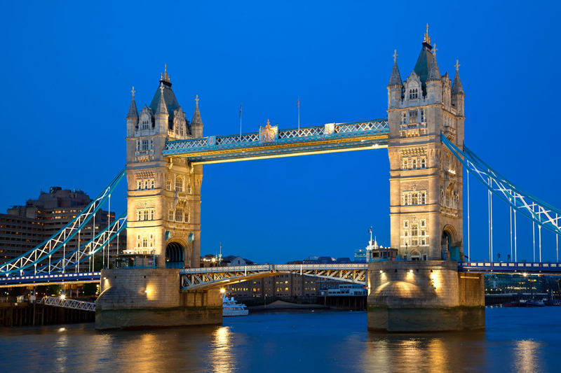
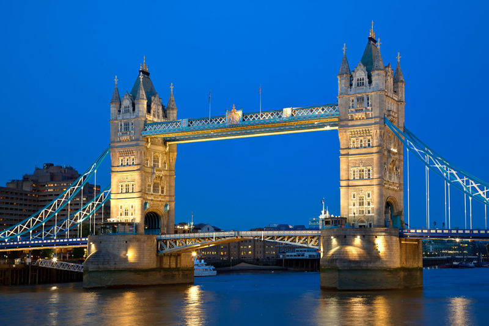

Rezervari
| Nume | Prenume | Data plecare | Data intoarcere |
|---|
What?
City of London este centrul istoric al orașului, și în același timp cel mai important cartier financiar al Regatului Unit.
About
Londra este un motor urias al economiei lumii. Londra a produs 365 miliarde $ în 2004 (17% din PIB-ul Regatului Unit), iar intreaga zona metropolitana londoneza a produs circa 30% din PIB-ul Regatului, adica mai mult decit PIB-ul Braziliei sau Rusiei.
More
Londra găzduiește cinci orchestre simfonice: London Symphony Orchestra, London Philharmonic Orchestra, Royal Philharmonic Orchestra, Philharmonia și BBC Symphony Orchestra. Principalele săli de concerte simfonice sînt Royal Albert Hall, Barbican Centre, Royal Festival Hall și Queen Elizabeth Hall. Royal Opera House din Covent Garden este casa Operei Regale și a Baletului Regal.
În Londra și-au început activitatea trupe rock celebre precum The Clash, Led Zeppelin, The Libertines, sau Pink Floyd. Săli de concerte rock celebre sunt Brixton Academy, Astoria sau Hammersmith Apollo.
Londra găzduiește carnavaluri și parade celebre, cum ar fi Carnavalul din Notting Hill, sau paradele de Sfântul Patrick (17 martie) sau Sfântul Gheorghe (23 aprilie).
În Londra se găsesc peste 30 de teatre, majoritatea concentrate în West End. Cele mai multe sunt comerciale și pun în scenă musical-uri și alte piese populare. Teatre "ne-comerciale" sunt National Theatre, The Globe (reconstrucție fidelă a vechiului teatru al lui Shakespeare), Old Vic și Young Vic.
Obiective turistice:
| Nr.crt. | Obiectiv |
|---|---|
| 1 | Big Ben |
| 2 | Palatul Buckingham |
| 3 | Roata din Londra |
| 4 | Tower Bridge |
| 5 | Turnul Londrei |
| 6 | Palatul Westminster |
| 7 | London Dungeon |
Personalități marcante din Londra:
-
Actori
- Kate Beckinsale
- Ben Chaplin
- Tom Felton
- Hugh Grant
- Jude Law
- Scriitori
- Michael Moorcock
- Ann Radcliffe
- Tom Sharpe
- David Thomson
- Elizabeth Bowen
- Muzicieni
- Adam Ant
- James Blake
- David Bowie
- Gary Crosby
- Ian Dury